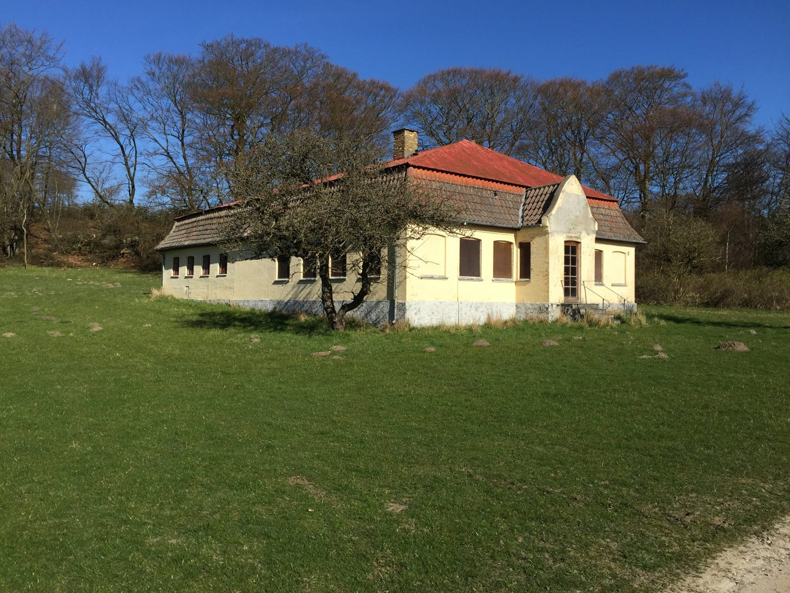
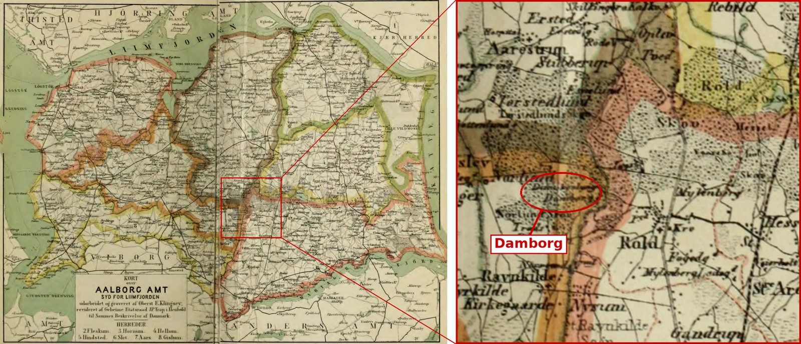

Chapter 4
The name Damborg
The times: how Danes got their surnames. Traditionally a child's surname was the father's first name plus -sen (son) or -datter (daughter), so it changed every generation. Niels Christian, born in 1821, was Olesen because his father was Ole; his mother, Maren Jensdatter, was the daughter of a Jens. A decree of 30 May 1828 ordered that every child be given at baptism a family name it would keep for life.1 A circular of 4 October 1828 left the choice to the father: his own surname, his first name plus -sen, or a place name. All his children were to bear the same name, so girls were no longer to be named -datter. A further circular of 6 August 1856 made the chosen name hereditary, to be carried by all later generations. There was no new law around 1850: the shift from -datter to -sen came from the rules of 1828 and 1856, and it came slowly. Many country parishes went on baptising girls as -datter for decades, and the same woman can appear as Jensdatter in one record and Jensen in the next. Niels Christian's own daughters, Dorthea Cathrine and Ulrica Christine, appear in the family records as Nielsen, after him, not Nielsdatter.2 The result was a kingdom crowded with the same few names. Nielsen, Jensen and Hansen were among the ten commonest surnames in 1801, and they still are.2 In the records, people were told apart by their given name and where they lived.1 The Name Law of 22 April 1904 made it much easier to change a surname. For a fee of 4 kroner, a local official could issue a certificate for a surname, or an added name (tilnavn) such as a farm or place name, that the applicant's father or grandfather had borne, the name of a family property, or a new name. About 7,400 existing surnames had been registered as protected by the families who bore them. To take one of those, a person had to show that it had been used in his family, or obtain the consent of those who bore it.2
The name Damborg can be traced to Niels Christian with certainty, but how or why he used the name is not certain.
Before 1863 he never used it, and he dropped it once he emigrated. In Terndrup, though, the name stuck to him: a neighbour's letter of July 1865 calls him simply "N. Damborg", his wife's petitions of 1869 name him Niels Christian Olesen Damborg, and her burial entry of 1874 calls her "Husmand Niels Damborgs Hustru".3
His sons used Damborg in Danish censuses from the 1880s.4 When Ulrica was buried in 1893, the priest entered her father as Niels Christian Olesen Damborg of Terndrup, 27 years after he had left.5
In 1904–05, with the help of a Copenhagen lawyer, Anders Christian and Jens won permission from the birkedommer (local judge) to take Damborg legally. Under the 1904 law, the fact that their father had used the name was enough to qualify them. Their descendants have carried it ever since.4
Where the name comes from. Damborg is a small forester's holding in Rold Skov. Tre Slægter fra Rold, a family history published in 1935, describes a Damborg line descended from that place, a southern branch, and mentions an older northern branch. According to the book, Damborg was the forester's holding in Damskoven on the Nørlund estate. Jacob Jensen Damborg took it over as forester in 1771, and his son Jens Jakobsen, a wooden-shoe maker in Rold, married Mette Hansdatter in 1805.6




Four theories are in play:
- A place name or a soldier's tag. He may simply have taken the name of the place in the Rold woods as his own added name. Soldiers, too, were sometimes known by an added name, and such soldier names (soldaternavne) could later become family names. That would fit his years in the cavalry, but no army record we have seen calls him Damborg, and neither idea explains why the name first appears in 1863.8
- Through his father. An Ole Nielsen died at Gravlev, north of the forest, in 1836, and the death register calls him Ole Nielsen Damborg. Tre Slægter fra Rold describes an older Damborg family there, unrelated to the Rold family: Niels Pedersen Damborg of Torsted in Aarestrup parish (d. 1748), whose son Ole Nielsen Damborg, born at Torsted in 1742, married Maren Nielsdatter and settled in Gravlev parish. Descendants still lived in Gravlev, Aalborg and Terndrup in the 1930s, among them a labourer, Chr. Olsen Damborg, who died at Rold in 1882. If Niels Christian's father belonged to this family, the name came down the male line. This once looked like the strongest lead, but it now faces two difficulties. First, when Maren Jensdatter remarried in 1830, six years before the Gravlev man died, she was probably entered as a widow, so he can have been her husband only if she was divorced or deserted, and no record of that has been found. Second, at the baptism Niels Christian's father was called Nordmand, the Norwegian, which fits awkwardly with an old Himmerland family. The pauper of 1836 may well be the Ole born in 1742, who would then have been 93. He is not among the Gravlev burials for 1835–36, so he was probably buried where he died; that burial entry, or his age in the 1834 census, would show who he was. This theory is now uncertain at best.9
- Through his mother. Tre Slægter fra Rold includes a Maren Jensdatter born at Rold in 1805, a daughter of Jens Jakobsen Damborg and Mette Hansdatter, and the family tree makes her his mother. He would then have learned of the connection when Mette Hansdatter died at Rold in 1861, and taken up the name soon afterwards. But the book lists this Maren as unmarried and childless, dying at Rold in 1879, and the 1860 census agrees: she was 55 and unmarried, living at Rold with her widowed mother in the household of her brother Peder Jensen Damborg. The records of his real mother point instead to a woman born about 1783: the bride of 1821 was 37, the lodger who arrived in Skelund in 1824 was 40, and the Skelund wife of 1834 was 51 (see Appendix E). This theory can now be set aside.10
- Through work at Damborg. A family theory, held by Leo Pedersen, is that as a young man Niels Christian worked at the forester's holding at Damborg and took his name from the place. The moving records found so far do not support it. They place him at Lillebrøndum in Bælum parish in 1841, moving to Terndrup in 1842, returning to Lillebrøndum from Dalsgaard (presumably the manor in Vive parish) in 1847, in Bælum on the levying roll of 1851–52, and at the manor of Ny Wiffertsholm in Solbjerg parish until he moved to Terndrup in 1853 (see chapter 2). None of them mentions Damborg or Rold Skov, and no record calls him a forester's servant. Nor do they rule it out. Nothing is known of him between his confirmation in 1835 and 1841, the years when a boy usually went into service, or between 1842 and 1847, and Damborg lies only about 17 km west of Terndrup as the crow flies. An arrivals list indexed under Rold enters a "Niels Christian Olesen", 20, a farm servant, arriving from Aalborg on 2 December 1844, but that man was three years too young, and Niels Christian had joined the cavalry earlier that year (see Appendix C). The name could also have reached him through the Damborgs living in his own parish, described below.
Where this leaves the question. If Ole Nielsen died before 1830, neither family link holds, and Niels Christian may have chosen or acquired the name himself: from the place in the Rold woods, from his years as a soldier, or through someone he knew. Why it first appears in 1863, at the baptism of his youngest child, is still unexplained. Two records would settle much of this: Ole Nielsen's burial, if he died before 1830, or a divorce or desertion licence, if he did not (see Appendix C).
A Damborg family in his parish. One record links him to the Damborgs of Rold. On 11 February 1856, two weeks after his son Jens, a son was born in Lyngby parish to the smallholder Jacob Jensen Damborg and his wife Christiane Christensen of Lyngby Skovhuse, and the two baptisms stand one above the other in the register. Jacob was a son of Jens Jakobsen Damborg and Mette Hansdatter of Rold. Among his son's godparents were Peder Jensen of Rold, probably Jacob's brother, and the farmer Peder Jacobsen of Terndrup. If he was the P. Jacobsen who later wrote of "N. Damborg" and acted as Kirsten Marie's guardian, the same man was close to both families before Niels Christian took the name.
Click here for notesHide notes10 notes
Abbreviation: DFT = Damborg family tree, "20130316 Damborg", Ancestry.com Member Trees, GEDCOM export of 26 May 2026, including its facts, research notes and attached images. Short titles refer to the Works Cited.
- 1FamilySearch Research Wiki, “Denmark Naming Customs” (first law on fixed surnames, 30 May 1828, largely unsuccessful; law of 1857 making patronymics fixed surnames, which other sources date to the circular of 6 August 1856; identification by given name and residence; law of 22 April 1904 liberalising name changes). ↩a ↩b
- 2Museum of Danish America, “Navigating Danish Genealogy: Fixed Family Surnames” (1828 decree; 1856 law; the ten most common surnames in 1801 and 2024; 1904 law allowing names from parents, grandparents or family property). On the 1904 law: Themis, "Navnet – det er stadig Jensen" (themis.dk) (name certificate from the local authority for 4 kroner; a surname or byname borne by father or grandfather, a family property name, or a new name distinct from about 7,391 protected surnames registered by families); FamilySearch Research Wiki, "Denmark Names, Personal" (4 kroner; the name must have been used in the family, or those bearing it must consent). On the 1828 and 1856 rules: Themis, "Navnet – det er stadig Jensen" (baptism ordinance of 30 May 1828, § 18; circular of 4 October 1828: the father chooses his own surname, his first name plus -sen, or a place name, and all siblings bear the same surname; circular of 6 August 1856: the name to be borne by all following generations); "Personnavn (lovgivning)", Den Store Danske (lex.dk) (a girl might not be given a surname formed with -datter, but was to have the same surname as a son); "The history of Danish surnames and patronyms", Anegrene (anegrene.webnode.dk) (women still baptised with -datter patronyms up to the end of the 19th century). On his daughters' names: DFT, Dorthea Cathrine Nielsen and Ulrica Christine Nielsen. ↩a ↩b ↩c
- 3DFT, Niels Christian Olesen: notes on the name Damborg and research timeline (first used 1863; used alternately afterwards; signs as Niels Christian Olesen after 1866). ↩
- 4DFT, Anders Christian Nielsen Damborg: event “Name change” 1905 and note (1904 name law; Copenhagen attorney; earlier use of Damborg in censuses); Niels Christian Olesen, note; Ulrica Christine Nielsen, note (“Departed Ulrikka Damborg”); Lyngby church book, annotation of 1905 in the margin of his baptism entry, births 1854, boys no. 7 (Danish Family Search, opslag 13919845; FamilySearch DGS film 007471320, image 316). ↩a ↩b
- 5DFT, Ulrica Christine Nielsen: confirmation 1877, Holsteinsminde; marriage (Arkivalier Online link); death 18 February 1893, Vindstrup Hestehave, tuberculosis; note on the name Ulrikka Damborg. Tystrup Sogn, Øster Flakkebjerg Herred, church book, female deaths 1893, no. 1 (Ulrikka Christine Nielsen, born 24 March 1863, died 18 February 1893 at Vindstrup Hestehave, buried 24 February, aged 29; widow of carpenter and smallholder Peter Nielsen; born at Terndrup, Lyngby Sogn; father Niels Christian Olesen Damborg of Terndrup; cause of death "Lungesyge"); image supplied by the family. Lyngby Sogn church book, births 1863, girls no. 3. Tystrup Sogn church book, marriages 1881, no. 6 (10 December 1881; groom Peter Nielsen, son of husmand Niels Petersen of Vindstrup Hestehave, born 1852; witnesses Niels Petersen and Jørgen Larsen; marginal note of consent from Terndrup, partly illegible); images supplied by the family. DFT, family of Peter Nielsen and Ulrica Christine Nielsen: Peter Nielsen born 17 November 1852, died 20 August 1892, Vinstrup; children Hans (born 23 December 1882), Kirsten Marie (born 25 October 1884, died 4 April 1896, Vindstrup Hestehave) and Lovise Jørgine (born 19 July 1888, died 15 August 1964, Vinstrup; married Carl Gustav Pedersen); descent through Erik Johannes Pedersen (1911–1985) and Leo Erik Ove Damborg Pedersen (b. 1942) to Ulrik Damborg. ↩
- 6J. Nørgaard, Tre Slægter fra Rold: Nørgaard – Damborg – Aldal og deres Efterslægt (Aars: H. L. Rafaelsen, 1935), digitised at slaegtsbibliotek.dk/937158.pdf (Damborg as the forester's holding in Damskoven under Nørlund, taken by Peder Jakobsen in 1756 and by Jacob Jensen Damborg in 1771; Jens Jakobsen's marriage to Mette Hansdatter, 1805; a northern Damborg line from Torsted, Aarestrup Sogn); also summarised in DFT, Ole Nielsen and Maren Jensdatter, research notes. ↩
- 7DFT, Ole Nielsen: research note on the origin of the name Damborg and the practice of adding a place to a common name. On the practice: FamilySearch Research Wiki, "Denmark Names, Personal" (a man could be known by his patronymic, his farm, or his trade, "Hans of Nordgaard farm", and appear as "Ivar Andersen", "Ivar Krog" or "Ivar Andersen Krog", adding the name of his home). Also Den Store Danske, "personnavn", lex.dk (surnames from place names began as tilnavne "der angav en persons hjemsted", that showed where a person lived, at first usually a village and later most often a single farm; among the peasantry fixed family names were fully established only in the late 1800s).
- 8DFT, Niels Christian Olesen: note on the name Damborg (“It was especially common practice in the military”). On soldier names in Denmark: Poul Balle-Petersen, "Efternavnet som kulturelt kendetegn", Folk og Kultur (lists soldaternavne among folk names alongside tilnavne, nicknames and farm names: "soldaternavne kunne også efterhånden opnå status af regulære slægtsnavne"); Torsten Balle, "Hvad skal manden hedde", Historisk Samfund for Thisted Amt, Årbog 1955 (names of ordinary military ranks "er ikke sjældne som tilnavne": Dragon, Grenader, Musketer, Soldat, Trommeslåer, Tambour, Rytter). On place names as added names, see note 7. ↩
- 9Hornum-Fleskum herreders death register (dødsanmeldelsesprotokol), 1836, entry no. 50, reported 22 March 1836: "Fattiglem Ole Nielsen Damborg af Gravle er død. Intet efterladt" (images supplied by the family; date and occupation read from a clearer copy of the page, 1 October 2026; compare "Almisselem" in entries 47 and 53 on the same page). DFT, Ole Nielsen: death 24 March 1836, Gravlev (a date that cannot be right if the death was reported on 22 March); research note on the Gravlev burial entry. Nørgaard, Tre Slægter fra Rold, pp. 32–33 and lineage charts, pp. 113–115 (the Torsted line: Niels Pedersen Damborg, d. 1748; Ole Nielsen Damborg, b. Torsted 1742, m. Maren Nielsdatter, of Gravlev parish; Christen Nielsen Damborg, b. Gravlev 1775; Ole Christensen Damborg, Lille Rørbæk, 1854; Chr. Olsen Damborg, d. Fogedgaarden, Rold, 1882). Gravlev Sogn, Hornum Herred, church book, male burials, October 1835–May 1836 (no Ole Nielsen; checked by the family, 29 September 2026). On Maren Jensdatter's status at her remarriage in 1830: Skelund Sogn, marriages 1830, no. 3 (see the note on her remarriage in chapter 1). ↩
- 10DFT, Maren Jensdatter: research note (Maren Jensdatter born 1805 in the Nørgaard book; grandmother's death 1861). Nørgaard, Tre Slægter fra Rold, p. 37, D2: "Maren Jensdatter, f. i Rold … 1805, død smst. … 1879. Ugift." Visborg Sogn marriage register, 1821 (bride aged 37); 1834 census, Skelund Sogn (Maren Jensdatter, 51). 1860 census, Rold Sogn, Hindsted Herred, Aalborg Amt, 1 February 1860, household no. 20 (Peder Jensen Damborg, 33; Mette Hansdatter, 79, widow, the head's mother; Maren Jensdatter, 55, unmarried; image supplied by the family, 1 October 2026). ↩